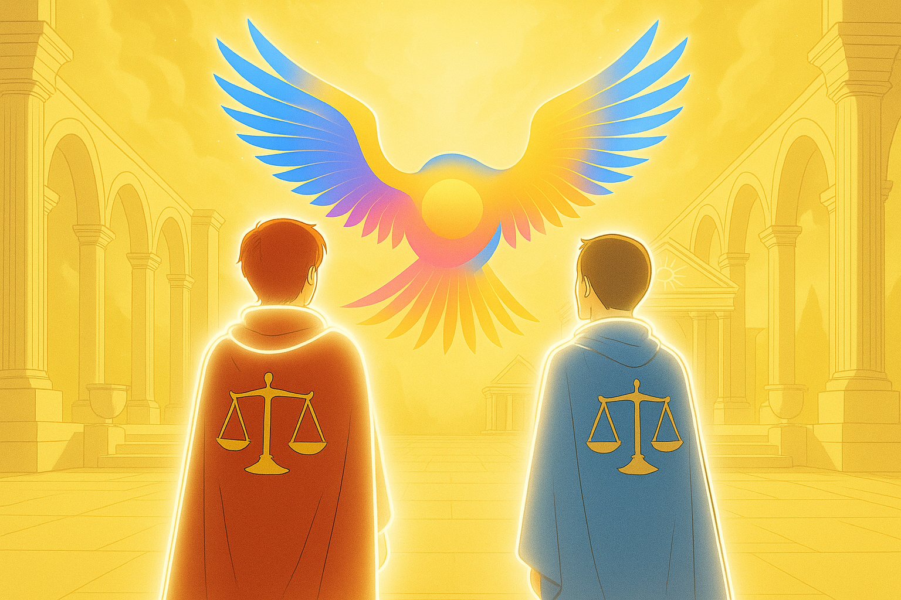
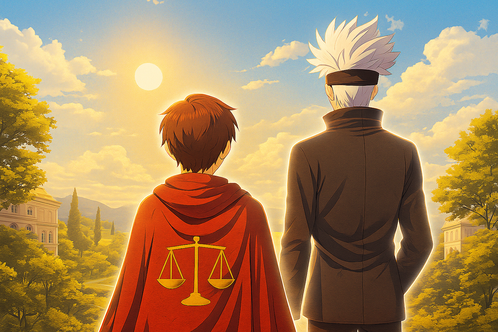

⬅ Retour
Histoire des Champions de la Lumière
Chapitre I : La Mission de Bryworn
Ici le Gardien Bryworn je m'adresse à tout les champions de la ✨┇Lumière. Comme vous le verrez à votre réveil j'ai repoussé Darko dans le Sous-Midgard un lieu ou nul d'entre vous ne peut pénétré. Je vous demande de tenir bon jusqu'à ce que ma tâche sois accompli. L'équilibre sera restauré. Je compte sur vous pour gagner le combat dans l'arène ! Ne me décevez pas. Mon voyage sera long... Qui sais ce que nous découvrirons.
Nul ne sais ou ma mission me mènera, j'ai foi en vous. Champions de la Lumière
Le lieu que vous voyez sur l'image s'appel le "Sous-Midgard" un lieu toujours gardé par Darko lui-même il y règne une aura sombre depuis la victoire de Darko, il était lumineux autrefois......

Chapitre II : La défaite de Darko & Renaissance de la Lumière sur Midgard
Après la défaite de Darko sur Midgard suite à mon intervention, j'ai appelé Lumino en forme d'ange pour lui faire part de mes inquiétudes et lui demander conseil. J'ai pu observer des changements, et après avoir banni Darko dans le "Sous-Midgard", ma mission est maintenant clair trouver un moyen de le renvoyer dans les abysse du Royaume du Chaos. Là ou est sa place ! Champions de @✨┇Lumière vous êtes le dernier rempart de la défense du Royaume des Hommes. Midgard à besoin de vous plus que jamais. Les Ténèbres ne doivent jamais entrer dans votre monde.
Ma mission est clair, je dois garder le palais et renvoyer Darko dans le Royaume du Chaos avant sa nouvelle ascension...
Le lieu que vous voyez est le palais de l'Ordre, un lieu ou Lumino règne. Les Champions de la Lumière peuvent ce ressourcer là-bas. "Mon aura est renforcé en ce lieu. J'ai senti sa puissance...

Chapitre III : Mon frère Axolotl & La renaissance de l'Équilibre
Voilà plus de deux jours que j'ai repoussé Darko, maintenant je dois penser à mon frère Axolotl, le Gardien des 🧿┇Ténèbres.
Je l'ai invité auprès de Lumino, l'incarnation de notre lumière qui lui offrit sa bénédiction en gage de confiance et de paix envers nos deux camps.
Pour le moment nous sommes en paix, je dois maintenant m'occuper avec l'aide de l'invocation des champions des membres de la Lumière
pour déloger Darko du Sous-Midgard. Mon frère, le Gardien des Ténèbres, ne peut m'accompagner dans cette tâche, lui seul détient la clé qui ouvrira la porte de son Royaume.
Champions de la @✨┇Lumière, votre heure est venue, il est temps d'invoquer votre héros pour que je puisse renvoyer Darko dans les tréfonds de notre monde.
Je compte sur vous pour cela. Ne me décevez pas !
Mon frère m'est ce qui est de plus cher à mes yeux, même si nous ne sommes pas toujours d'accord je compterai sur lui quoi qu'il advienne.
Le lieu que vous voyez est la salle où Lumino peut apparaître dans le Temple des Gardiens, chaque Gardien a sa salle qui lui est réservée pour se ressourcer ou appeler leurs esprits.
Frérot, je compte sur toi pour ne pas m'abandonner, nous serons ensemble pour toutes ces épreuves.
Je crois que je vous dois des excuses pour mon absence de deux jours, je devais me reposer et réfléchir sur moi-même,
car mon comportement envers mon frère est mauvais. C'est pourquoi il est temps que ça change.
Merci à tous pour ce soutien, cette histoire ira loin j'en suis convaincu.
En attente du prochain chapitre (Merci Ethan💙).

Chapitre IV : Combat du Sous-Midgard & Arrivée de Gojo dans l’équipe de la Lumière
Nous avons vaillamment combattu Darko dans le Sous-Midgard. Après l'utilisation de nos pouvoirs combinés et des attaques plus que dévastatrices,
le royaume a subi certains dommages, mais la Lumière est revenue dans le bas de Midgard.
Après avoir utilisé nos pouvoirs pour restaurer Midgard, nous avons rejoint le palais des Gardiens où nous avons rechargé nos énergies respectives.
Après avoir vaincu Darko et l’avoir envoyé dans les Ténèbres dont il est issu, le combat sera long mais nous devons préserver la Lumière !
Je compte sur vous, mes champions. Notre histoire commence ici.
Midgard a besoin de vous, et les Ténèbres vous guettent.
Notre mission est terminée, à vous de reprendre le relais… À bientôt mes Champions !
Gojo : Mes amis, protégeons le Royaume de Lumière. Vous m'avez invoqué, j'ai confiance en vous. Soyez forts, je vous aiderai.
La mission de mon frère est terminée, la mienne commence. Désormais je dois faire sans lui, du moins pour le moment.
Je garde toujours un œil bienveillant et protecteur sur lui.
La première illustration vous montre le Sous-Midgard tel qu'il aurait dû être à ses débuts, la porte des Ténèbres est proche de ce Royaume.
Le lieu que vous voyez sur la deuxième illustration est toujours le Domaine des Gardiens dans la salle de Lumière.
Moi et Gojo sommes rassemblés.
Désormais, à la fin de ce chapitre, c'est à vous que revient l'avenir de ce monde. Vous êtes responsables de sa sauvegarde… ou non.

yworn" style="border-radius:15px; max-width:90%; height:auto;">